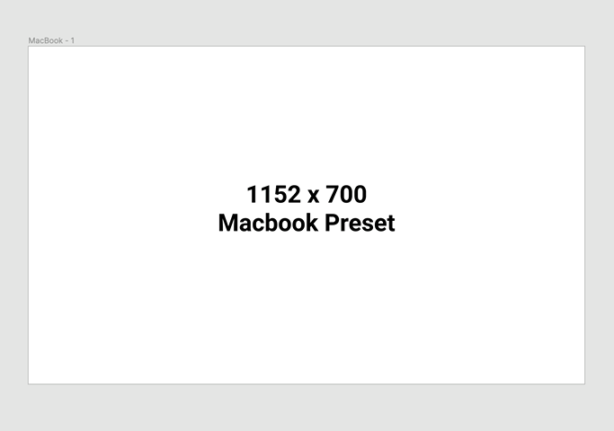
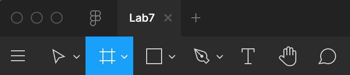
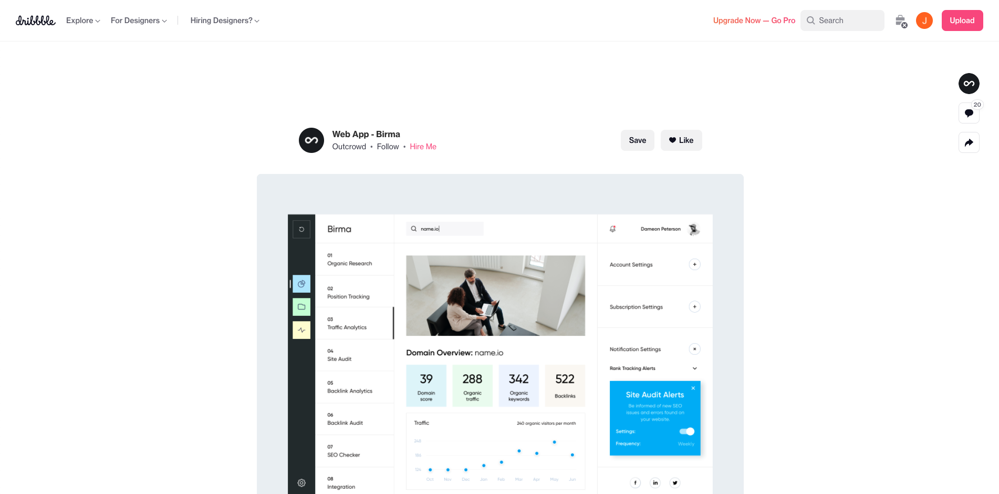
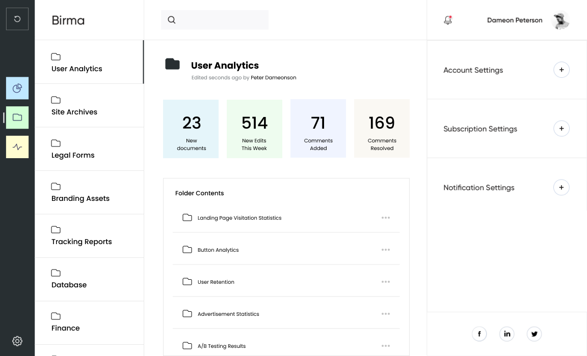

For this lab, you’ll be doing some more Figma practice by designing an additional view for a website design of your choice. You can use the zipped file currently in your lab4 folder or download the assignment file here:
Start off by visiting a site like dribbble or any other web design inspiration site, and choose a design you like. Many of the designs on dribbble are not fully designed/implemented websites, and only have a landing page.
Think of another view/page you could add to that website (hint: look at the navigation bar), and design that new view in Figma, following the same overall design of the rest of the website.
This new view will just be the size of one screen, so you don’t need to worry about designing an entire scrolling webpage. Feel free to screenshot images, icons, and reusable components like the navbar, as they can be pretty difficult to recreate.

To set up your new view, create a new Figma file and select the MacBook frame size by doing the following:
- Select the Figma frame tool 
- In the right menu under Design, toggle the Archive drop-down menu and select Macbook (1152 x 700)
After you’re finished, carefully follow the instructions in index.html to submit your new design.
Choose a website design on dribbble:
Create a new view, consistent the original design:
Submit your files to your GitHub Submission Repository by copying all the files inside the "lab4-starter" folder into the lab4 folder of your submission repository (replace the index.html originally in it). In your terminal, from your GitHub Submission Repository, run the following Git commands:
- git add -A
- git commit -m 'finished lab4'
- git push
This assignment is due Monday, October 10th at 7:00PM PST.